The labs contains the steps for Automate Delivery: Integration of Load Test Tools with Dynatrace Session 1 training.
You will get access to a EC2 instance that has been provided for the purposes of this training.
Prerequisites
- Dynatrace SaaS/Managed Account. Get your free SaaS trial here.
- Chrome Browser
What You'll Learn
- Integrate Jenkins with Dynatrace
- Setup Docker Pipeline in Jenkins
- Leveraging Auto tags Rules for pipelines in Dynatrace
- Creating tags from Build Stages
Other useful commands:
- To view all docker containers:
docker ps -a - To view the downloaded images on localhost:
docker images - To remove a particular image:
docker rmi <IMAGE-NAME> - To stop a docker:
docker stop <CONTAINER-ID> - To remove a docker:
docker rm <CONTAINER-ID> - To run a docker in interactive bash:
docker run -it <CONTAINER> /bin/bash - To delete all the unused images:
docker system prune -a -f - To pull a particular image:
docker pull <docker-image> - Jenkins pipeline: Command:
https://github.com/nikhilgoenkatech/JenkinsBankApp
Log back into your Dynatrace environment and check if OneAgent is still running.
On your left navigation, select Hosts and you should still see a monitored EC2 host.
Check if OneAgent is running
Log back into your Dynatrace environment and check if OneAgent is still running.
On your left navigation, select Hosts and you should still see a monitored EC2 host.
Running Jenkins in Docker
The Jenkins docker would already be present in your ubuntu instances and can be seen with "docker images"

To run the Jenkins docker, execute docker run -d --network mynetwork --name Jenkins-Dynatrace -p 8020:8080 -v /var/jenkins:/var/jenkins_home -v /var/run/docker.sock:/var/run/docker.sock nikhilgoenka/jenkins-dynatrace-workshop
Retrieving Jenkins Password
The initial password can be retrieved as cat /var/Jenkins/secrets/initialAdminPassword
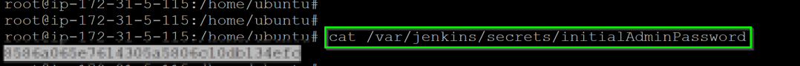
With the retrieved password, access the Jenkins URL via your web browser.
Within your Host View, dropdown the Properties and Tags and you will get a list of various metadata associated with the host created. Locate the Public IP Address and copy its value.

Open up your web browser and access the Jenkins URL via <IP address>:8020
Installing Docker Pipeline Plugin
Once you login, you will see the screen as below. Click on "Install suggested plugins" as below:
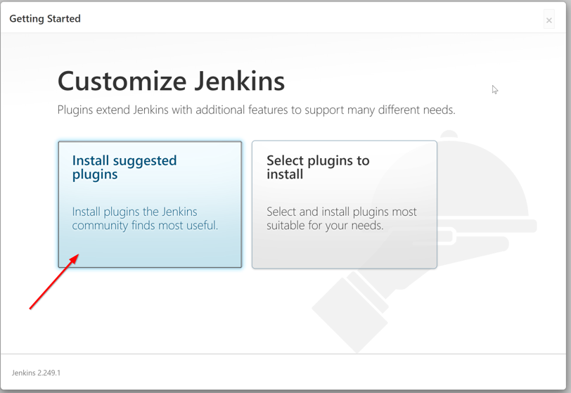
Further, add an admin user with username "admin" and password "dynatrace"

- Click on Manage Jenkins on the left menu
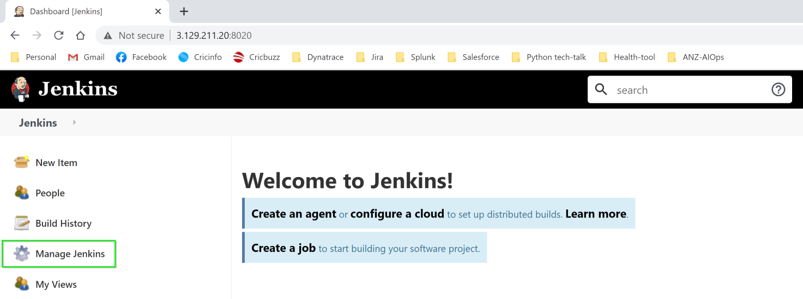
- Click on Manage Plugins as highlighted below:
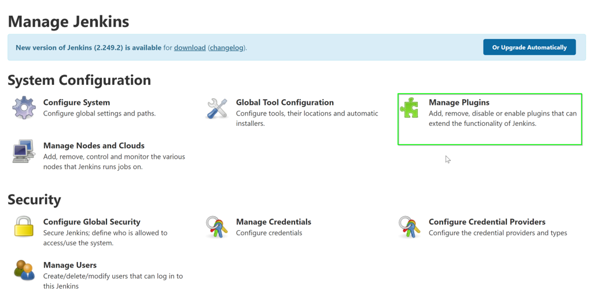
- Now, click on Available plugins and input
dockerin the search bar - Select Docker Pipeline
- Click on Install without restart
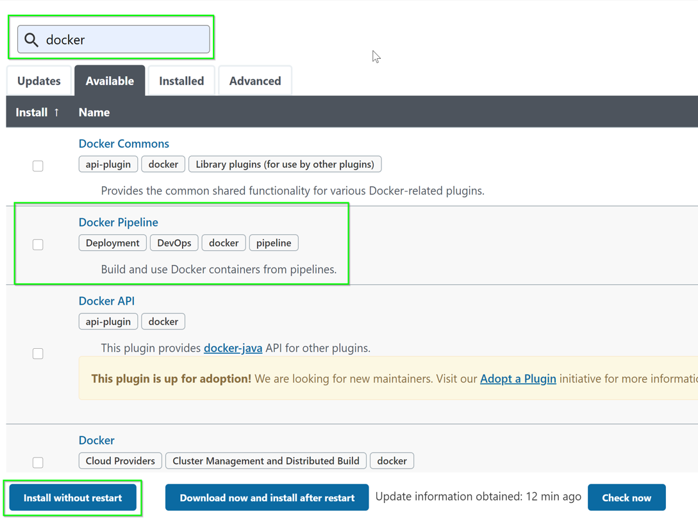
Configure Environment Variables
Within Jenkins, click on Manage Jenkins > Configure System

- Look for environment variables as per image below:


- Add the following environment variables:
- DT_URL with value https://mou612.managed-sprint.dynalabs.io/e/{environmentid}
- DT_TOKEN
- PUBLIC_IP
To get your DT_TENANT, go to the Web Browser and extract the URL path as per below.

To get your DT_TOKEN, go to Settings > Integration > Dynatrace API > Generate Token and follow the below:
- Create a token with LoadTest
- Toggle Data ingest, eg: metrics and events
- Click on Generate
- Clck on Copy
To get your PUBLIC_IP, get it from the earlier step

Configure Jenkins Pipeline
- Click on "New Item" on the left side:
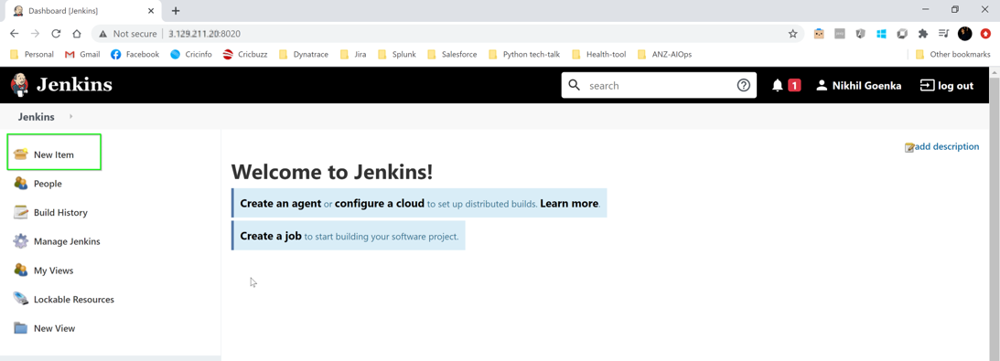
- Add a pipeline as per below:
- Item name -
My Pipeline - Choose Pipeline
- Click on OK
- Item name -

- Use the pipeline definitions as per below:
- Definition - Dropdown Pipeline script from SCM
- SCM - Dropdown Git
- Repository URL -
https://github.com/nikhilgoenkatech/JenkinsBankApp/ - Click on OK
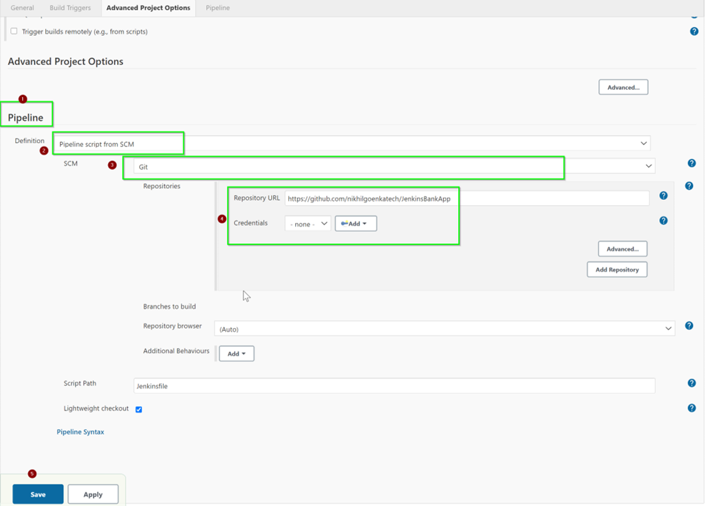
Creating Auto Tags
Within Dynatrace, on the left menu go to Settings > Tags > Automatically applied tags
Use the following:
- Tag name -
JenkinInstance - Optional Tag value -
{Ec2Instance:SecurityGroup} - Conditions -
- Dropdown AWS Security Group
- Dropdown begins with
- ANZ_ACM_Security_Group
- Check Case sensitive
- Click on Save

Within the Host Properties and tags, JenkinsInstance tag will be added
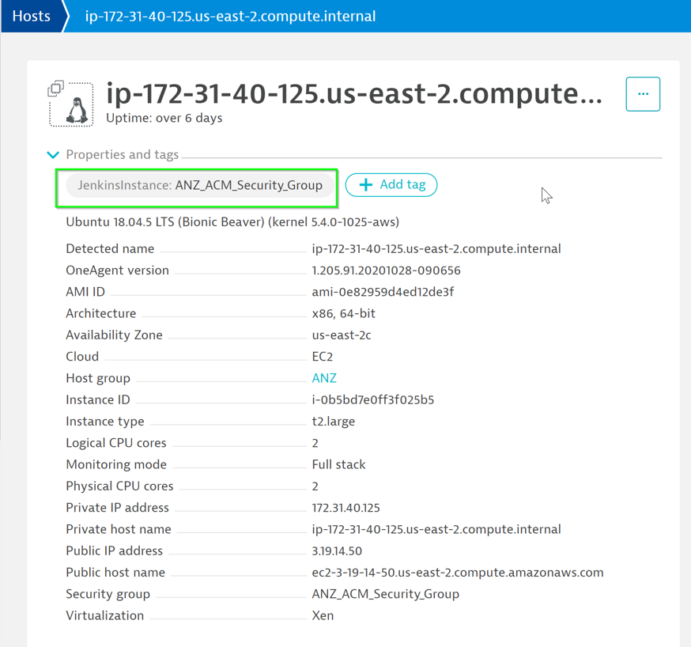
Creating Tags for Build Stages
Use the following:
- Tag name -
DockerService - Rule applies to - Dropdown Services
- Optional Tag value -
{ProcessGroup:DetectedName} - Conditions -
- Dropdown Docker container name
- Dropdown exists
- Click on Save
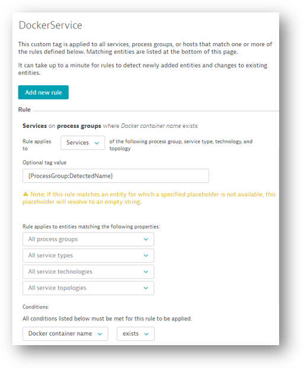
Use the following:
- Tag name -
Environment - Rule applies to - Dropdown Services
- Optional Tag value -
{ProcessGroup:Environment:ENVIRONMENT} - Conditions -
- Dropdown ENVIRONMENT (Environment)
- Dropdown exists
- Click on Save
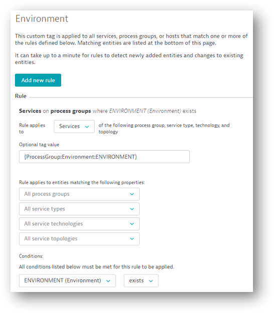
Build Pipeline in Jenkins
Back in Jenkins, click on Build Now for the My-Pipeline

Review changes in Dynatrace
You can see the changes reflected in SampleOnlineBankStaging Process View
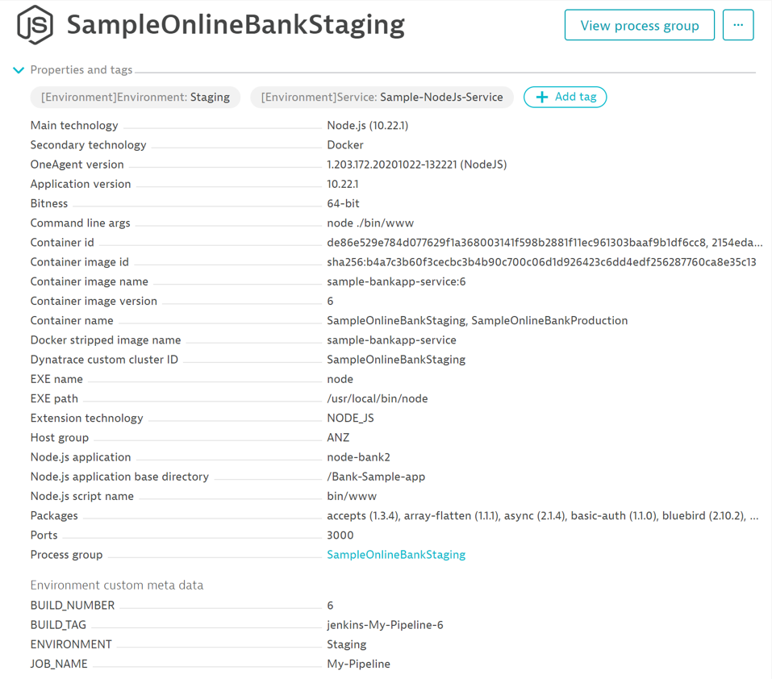
You also can see the changes reflected in node-bank2 Service View
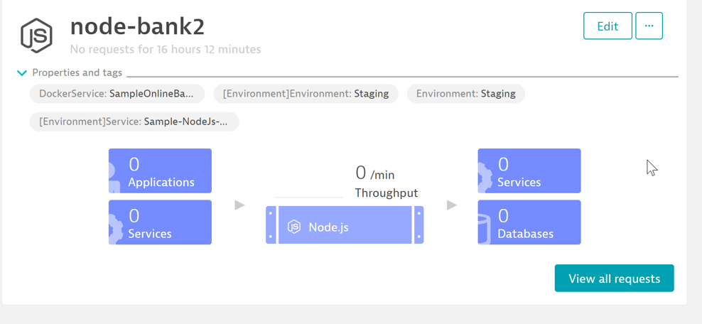
We hope you enjoyed this lab and found it useful. We would love your feedback!